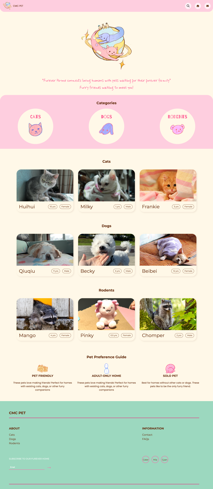
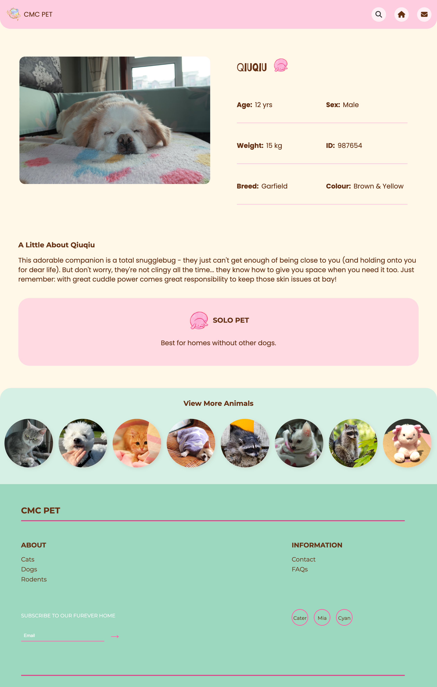
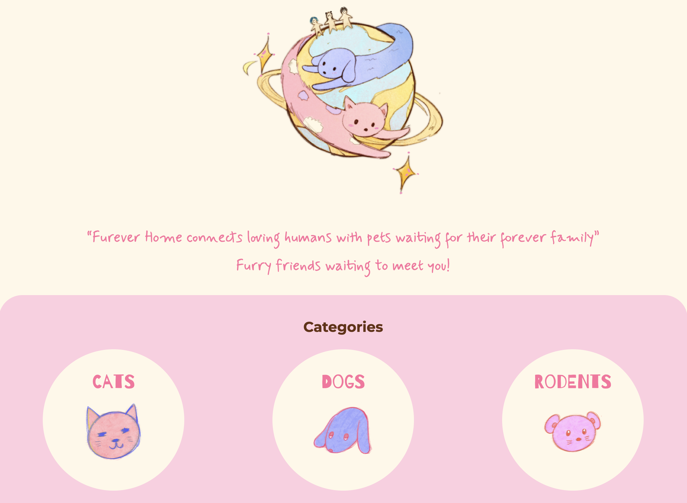
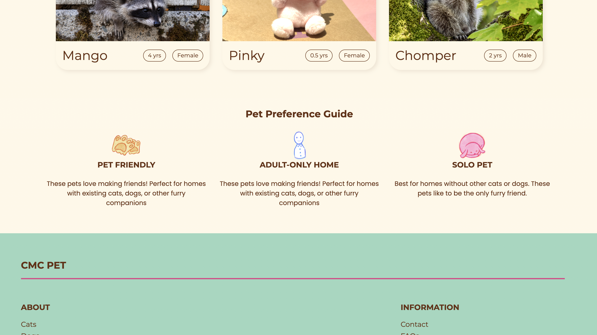
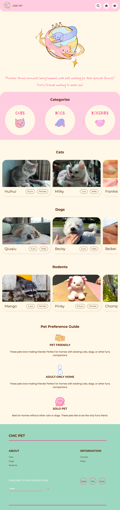
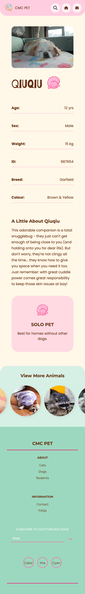

Designed a hand-illustrated adoption platform focused on emotional accessibility and mobile responsiveness.

The course requirements called for building a functional, multi-page website. We set a higher standard: to create a platform that fosters a sense of care for the animals even before visitors click to browse.



Designed and illustrated the full asset library in Procreate — logo, category icons, and preference guide icons.
Procreate Icon system Brand identityResponsible for CSS architecture design across three breakpoints (desktop, tablet, and mobile).
CSS Grid 3 breakpoints Media queriesBuilt the search bar, dropdown nav, and footer. Managed link paths across pages and coordinated branch merges throughout the project — the heaviest contributor by commit volume.
Navigation Search bar Git workflowHand-drawn wireframes outline the layouts of the home page, category pages, and pet detail pages. The basic content hierarchy has been established.
Rebuilt the grid system with three explicit breakpoints after feedback on the mobile layout.
The consistent illustration style, informative icons, and well-thought-out color scheme enhance the website's functionality and provide users with a warm and inviting experience.
Illustration consistency, information-dense icons, and a deliberate colour strategy each solved a different part of the same problem: making an adoption site feel like it was built for people, not inventory.
Every icon, logo, and pet image was hand-illustrated in Procreate. Applied consistently across all pages, the style functions as a visual identity — it signals craft and care in a way stock assets can't.
Pet-friendly / adult-only / solo-pet indicators let visitors self-filter at a glance, they carry compatibility information without adding UI complexity.
Cream background, soft accent tones, and rounded type were chosen specifically to counter the clinical aesthetic of typical adoption platforms. The colour palette communicates approachability before a single word is read.
Hover each screen to scroll through the full layout.


The mobile layout feels unnatural — the reflow between breakpoints isn't smooth enough.
Scrapped the single media query approach and rebuilt with three explicit viewport configurations. The fix required rethinking the grid at each size rather than overriding a desktop layout. The result made each viewport feel intentional.
We built mobile-first, which kept the base layout lean.
The illustration style only worked because every touchpoint used it — logo, icons, preference guide, pet images.
Each team member wrote slightly different patterns for similar components. A shared base stylesheet agreed on before branching would have eliminated most of the merge friction.
Team members tested on different devices, which surfaced inconsistent results across the process. Adopting a shared responsive viewer from the start would have caught cross-device issues earlier and kept feedback consistent throughout.